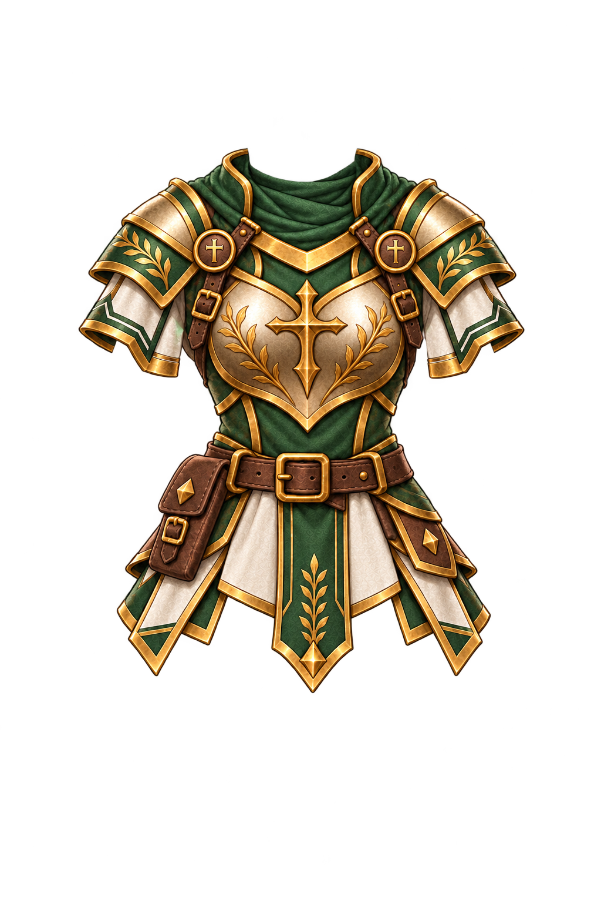

base
source

candidate

DEV-only. Canvas comum 1024×1536; nenhuma correção de fit. Sem aprovação humana ou READY.
O encaixe deve existir na arte: parece vestido ou colado? Cyan: landmarks diagnósticos, linha vermelha: pés do HD.
